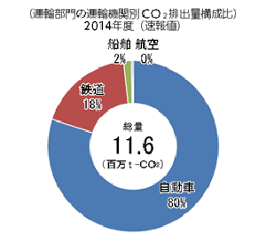

ここからは、年代別による運輸部門のCO2排出量の変化と、その内訳について見ていきます。
そのうえで、CO2の排出量削減に向けて何に対策をすべきであるのかを簡単に述べていきます。
はじめに、運輸部門のCO2の排出量の推移は以下の通りです。
CO2の排出量は90年代から上昇し、2001年を境に減少傾向となっています。
また、排出されるCO2の総量のうち自動車が高い割合を占めています。
ここからは主に自動車に着目して、その内訳を見ていきましょう。
次に、排出量を割合別に分けたものを見ていきましょう。

図を見てみると、運輸機関ごとのCO2の排出量は自動車が80 %を占めています。
また、次の表をご覧ください。

自動車が人一人を運ぶ際に排出するCO2の量をバスや鉄道といった主な公共交通機関と比較すると、かなり多い量であることが分かります。
これらの事実から、皆さんも思ったであろう通り、CO2の排出量削減のためには
ということが考えられます。

ここからは、自動車に対して具体的にはどのような対策が必要かについて見ていきたいと思います。